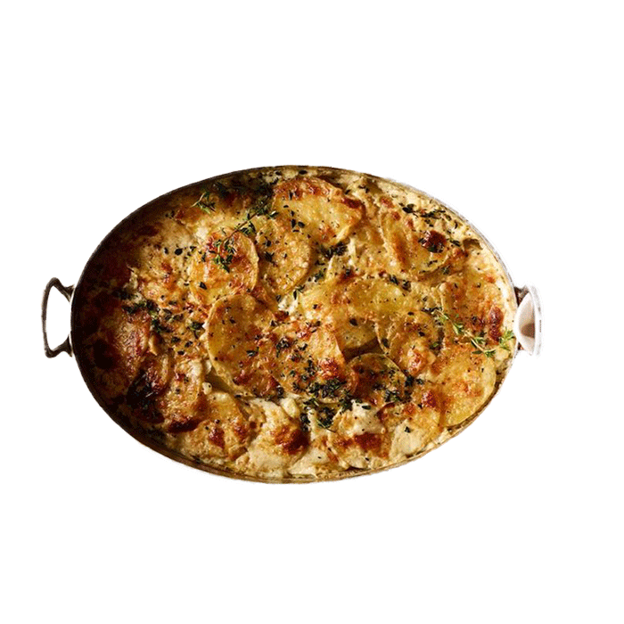

레시피

< 고구마 그라탕 >
* 고구마 그라탱 재료
고구마 2kg 모차렐라 치즈 1컵 옥수수콘 50g 양파 1/4개 식빵 1장 햄 50g 우유 50ml 파슬리가루 견과류 20g 건포도 10개1. 제일먼저 고구마를 삶아줄게요 물이 팔팔끓으면 중불로 줄이고 대략 20분정도! 고구마사이즈에따라 다르니 젓가락으로 푹푹 찔러보세요
2.양파랑 베이컨은 잘게잘게 썰어주고 옥수수도 준비! 콘옥수수통조림 사용하셔도 괜찮아요 저희집은 냉동실에 얼려둔게 있어서 그걸 사용
3.팬에 먼저 베이컨을 달달달 볶아주다가 양파넣고 후추 톡톡해서 볶아냅니다
4.잘삶긴 고구마는 잘으깨주고~ 재료들을 다합쳐서 섞어주세요
5.오븐용 그릇에 담아주기 고구마담고 피자치즈담고 고구마담고 피자치즈담고 이렇게 층층이 올려주세요
6.180도 예열한 오븐에서 10분! 오븐이 없으시면 전자렌지에 피자치즈가 녹을만큼만 돌려주셔도 좋아요